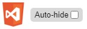

Блог Full-Stack .NET-Developer`а
Это блог...
17.07.2020 Пятница 19:03.
...В котором я буду записывать последовательно то, что я изучал, делал, и показывать это на реальных примерах (если на такое будет время...)
Для чего я это делаю? - Для тренировки, конечно! Буду изучать шрифты, дизайн, вставлять это в код и таким образом отрабатывать навыки. Конечно не только шрифты! Буду изучать всё, что связано с HTML, CSS и использовать это на странице, если получится... В дальнейшем, надеюсь, появится JavaScript, ну и конечно же самое главное - .NET и все связанные с ним технологии😊.
Может, буду писать, что интересное узнал (неважно из каких источников.)
Сегодня например я заметил, что для того, чтобы использовать шрифт на своей странице с помощью встраивания его через гиперссылку в html-код в тег <head>, например отсюда, то при запуске сайта из Visual Studio 2013 Browser Link (обновление страницы прямо из редактора) включается, однако почему-то отключается основная масса опций которые Web-Essentials (плагин для Студии, который упрощает веб-разработку) предоставляет именно для работы с Browser Link, а именно:
-
Выбор элемента на странице для редактирования с автоматическим отображением изменений в редакторе,
-
Просто выбор элемента для выделения всего его кода в редакторе,
-
Сохранение изменений стилей, сделанных в инструментах разработчика через F12 прямо в коде редактора,
-
Автоматическое сохранение таких изменений и пр.
- т.е. самое вкусное! Осталась только опция auto-hide для панели Web-Essentials, отображаемой внизу страницы в браузере: 
Что за недоработка - не знаю. Жаль, потому, что очень хороший плагин. Та же ситуация наблюдается, если попробовать подключить ссылку на шрифты в CSS-файле через селектор @import. Но проблема сразу решается, когда шрифты физически добавляются в локальную папку сайта и подключаются уже оттуда - Тогда панель Web-Essentials выглядит как надо и все функции работают! Что самое важное - можно и CSS-правила редактировать прямо на странице - они отобразятся в коде! Как же они мгновенно отображаются на странице, когда изменяются прямо в редакторе - не надо даже сейв нажимать. При этом редактор ничуть не тормозит. asdfasdfafasdfasd